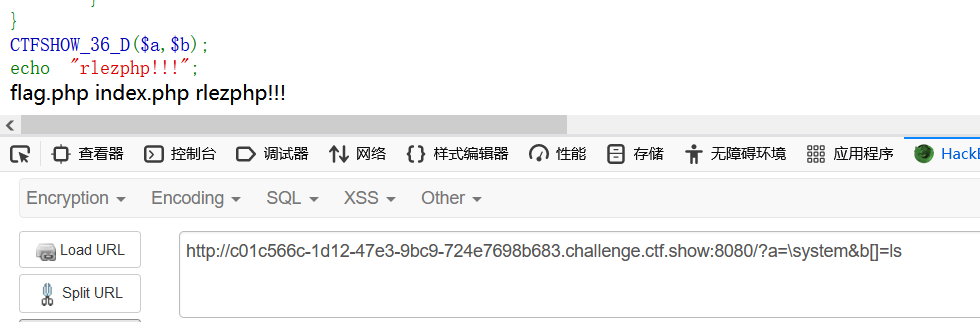
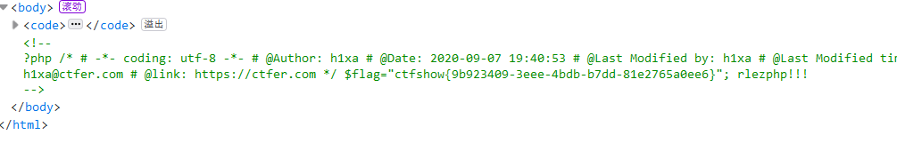
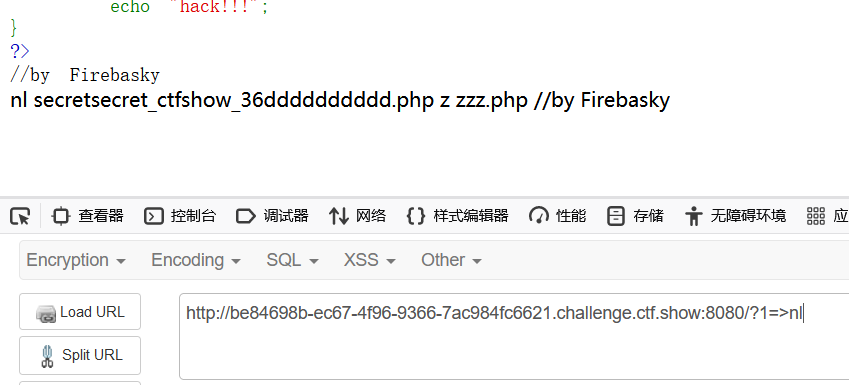

耗子尾汁+nl难了
前言
这两道题目都是涉及到命令执行的，就放在一起了。
红包题：耗子尾汁
forward_static_call_array - 调用静态方法并将参数作为数组传递
语法
forward_static_call_array( callable $function , array $parameters )
| function | 是 | 要调用的函数或方法。 该参数可以是具有类名的数组，以及具有方法名的方法或字符串。 |
|---|---|---|
| parameter | 是（取决回调函数是否有参数） | 一个参数，将所有方法参数收集在一个数组中。请注意，forward_static_call_array() 的参数未通过引用传递。 |
在php当中默认命名空间是\，所有原生函数和类都在这个命名空间中。普通调用一个函数，如果直接写函数名function_name()调用，调用的时候其实相当于写了一个相对路径；而如果写\function_name()这样调用函数，则其实是写了一个绝对路径。如果你在其他namespace里调用系统类，就必须写绝对路径这种写法。
这个知识点的内容是我在别人的博客里看到的，能很好的解释payload中命令的调用。
1 |
|
- 通过代码审计可以发现，如果a不在数组的系列名单中，就会执行forward_static_call_array方法。
通过forward_static_call_array函数的语法，我们构造a为一个命令，b作为数组传递参数：
因此得到payload：**?a=\system&b[]=ls**
使用反斜杠是因为这是在其他的类调用的系统函数system，所以加上\，也能绕过前面黑名单的验证：

?a=\system&b[]=cat flag.php
获取flag，在源码中得到flag。

https://www.jc2182.com/php/php-forward-static-call-array-ref.html
【nl】难了
1 |
|
- shell_exec() php 执行shell脚本，执行命令。
因此考虑查看一下当前的目录，**?1=ls**
返回secretsecret_ctfshow_36dddddddddd.php z zzz.php这两个文件名，但是由于代码中对于1的参数有长度的限定，不能使用cat命令进行直接的查询。然后做的时候是一直在找关于shell_exec()函数的一些长度绕过，通配符也尝试过，也看到一些方法尝试使用将执行的命令写入到一个文件中，但是还是没有想到绕过的方法。后来是看了wp，知道是自己方向不对。
- 题目也提示的nl，但是一开始看到题目是没有想到这个命令的，只觉得是难了的一个拼音缩写，所以也没有去留意。后来就知道是需要用到nl命令的。
nl命令用于计算文件中行号。nl可以将输出的内容自动加上行号，其可以将行号做比较多的显示设计，包括位数和是否自动补0，输入文件内容等功能。
题目对字数的限定，因此只能使用nl命令：
Linux中可以将文件名作为函数和参数，通过星号通配执行
解题：
- ?1=>nl
将>左侧的内容写入右侧文件，因此相当于新建了一个叫nl的空文件

执行之后列出了 nl文件和两个PHP文件
然后就是要读取PHP文件中的内容：
?1=*>z 表示把以上者三个文件名字都写进z文件中 按照字母默认排序 是 n s z
*代表字符串 nl secretsecret_ctfshow_36dddddddddd.php.php zzz.php，正好符合我们想要的nl xxx.php的执行读取命令，将其写入一个空文件z，访问该文件z就会自动执行字符串 nl secretsecret_ctfshow_36dddddddddd.php.php zzz.php。
最后，再次访问http://(url)/z时，可下载php到本地，得到flag。